Zones, entrées, sorties et jonctions
Pour chaque région : l’ordre des zones, le côté par lequel on sort de l’une et on entre dans la suivante, et la position exacte des passages. Sur les cartes, les cadres bleus sont les passages vers une autre zone et les cadres orange les portes (maisons, grottes). Cliquez sur une carte pour l’agrandir.
Rizières Desséchées
- Hameau de Dongqiao (Village) — sortie par le bord sud ↓, au milieu, puis entrée dans Digue et Marais Craquelés par son bord nord
- Digue et Marais Craquelés (Zone sauvage) — sortie par le bord est →, au milieu, puis entrée dans Rizières Desséchées par son bord ouest
- Rizières Desséchées (Sanctuaire du soleil)
Branche : le Hameau des Lucioles s’atteint par le bord sud de la zone sauvage (à droite).
Hameau de Dongqiao Village · 32 × 28 cases
 123456
123456| Où | Mène à | Accès |
|---|---|---|
| ↓ bord sud, au milieu (case 15, 27) — passage de 3 cases | Digue et Marais Craquelés Zone sauvage · on y arrive par le bord nord | libre |
5 portes (maisons, grottes, escaliers)
| Où | Mène à | Accès |
|---|---|---|
| partie nord-ouest (case 7, 6) | Maison de Hou Yi et Chang'e | libre |
| partie nord (case 15, 6) | Maison du Doyen Wen | libre |
| partie nord-est (case 23, 6) | Chaumière de Lin | libre |
| partie ouest (case 8, 18) | Grenier communal | libre |
| partie est (case 22, 18) | Étable de Dahei | libre |
Digue et Marais Craquelés Zone sauvage · 64 × 32 cases
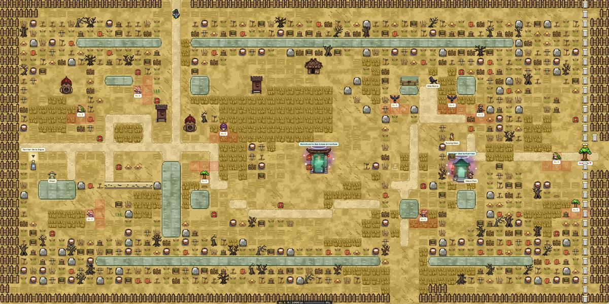
123456| Où | Mène à | Accès |
|---|---|---|
| ↑ bord nord, à gauche (case 18, 0) — passage de 3 cases | Hameau de Dongqiao Village · on y arrive par le bord sud | libre |
| ↓ bord sud, à droite (case 42, 31) — passage de 3 cases | Hameau des Lucioles Hameau · on y arrive par le bord nord | libre |
| → bord est, au milieu (case 63, 16) — passage de 3 cases | Rizières Desséchées Sanctuaire du soleil · on y arrive par le bord ouest | fermé tant que vaincre Gardien de la digue n’est pas |
3 portes (maisons, grottes, escaliers)
| Où | Mène à | Accès |
|---|---|---|
| partie ouest (case 3, 16) | Terrier de la Digue | libre |
| au centre (case 33, 17) | Le Royaume des âmes errantes | libre |
| partie est (case 48, 18) | Le Village des lanternes enneigées | libre |
Hameau des Lucioles Hameau · 28 × 22 cases
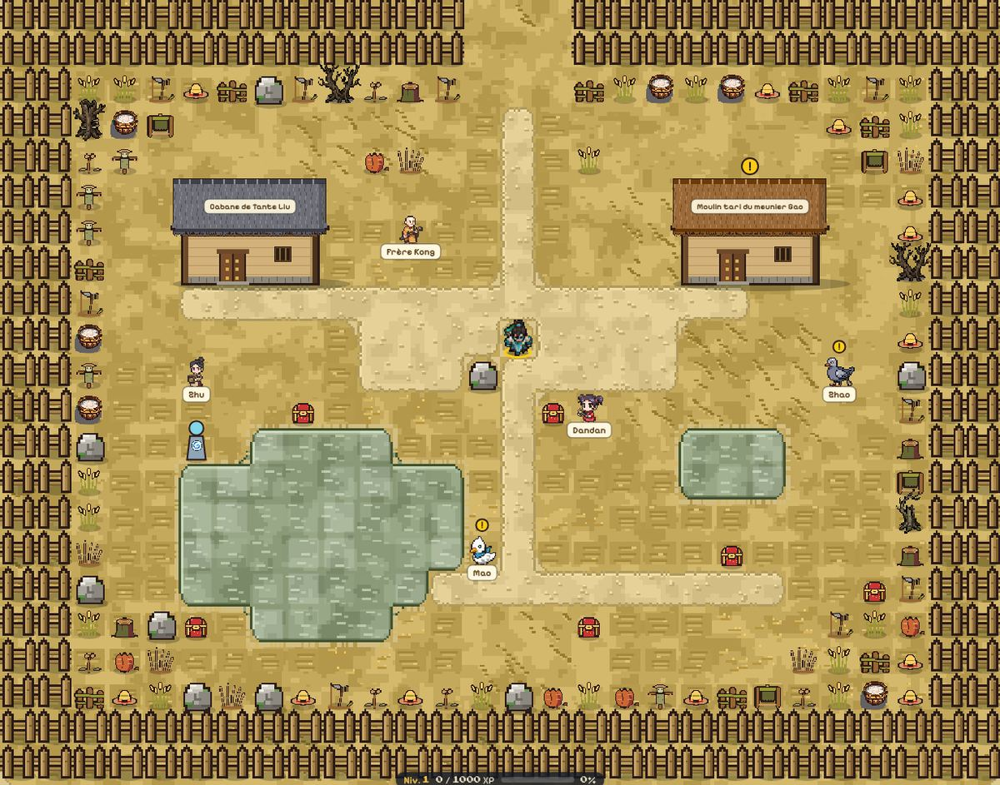
123| Où | Mène à | Accès |
|---|---|---|
| ↑ bord nord, au milieu (case 14, 0) — passage de 3 cases | Digue et Marais Craquelés Zone sauvage · on y arrive par le bord sud | libre |
2 portes (maisons, grottes, escaliers)
| Où | Mène à | Accès |
|---|---|---|
| partie nord-ouest (case 6, 7) | Cabane de Tante Liu | libre |
| partie nord-est (case 20, 7) | Moulin tari du meunier Gao | libre |
Rizières Desséchées Sanctuaire du soleil · 30 × 22 cases
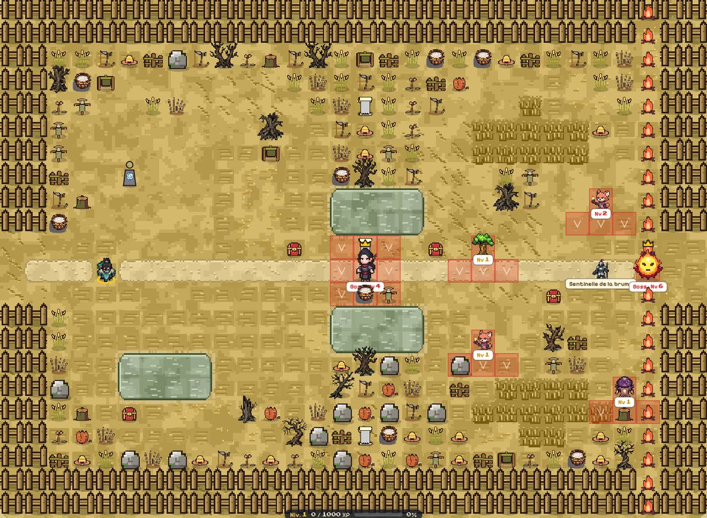
12| Où | Mène à | Accès |
|---|---|---|
| ← bord ouest, au milieu (case 0, 11) — passage de 3 cases | Digue et Marais Craquelés Zone sauvage · on y arrive par le bord est | libre |
| → bord est, au milieu (case 29, 11) — passage de 3 cases | Galerie de Basalte Route d’accès · on y arrive par le bord ouest | fermé tant que vaincre Soleil Ardent n’est pas |
Gorges du Volcan
- Galerie de Basalte (Route d’accès) — sortie par le bord nord ↑, au milieu, puis entrée dans Hameau des Braises Sages par son bord sud
- Hameau des Braises Sages (Village) — sortie par le bord est →, au milieu, puis entrée dans Coulées et Passerelles Rougeoyantes par son bord ouest
- Coulées et Passerelles Rougeoyantes (Zone sauvage) — sortie par le bord est →, au milieu, puis entrée dans Gorges du Volcan par son bord ouest
- Gorges du Volcan (Sanctuaire du soleil)
Branche : le Sources Tièdes s’atteint par le bord sud de la zone sauvage (à droite).
Galerie de Basalte Route d’accès · 64 × 24 cases
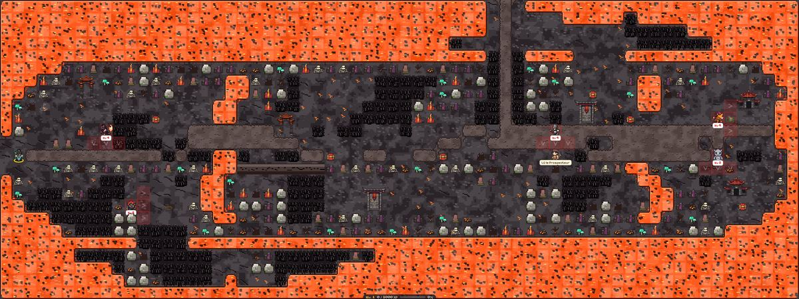
12| Où | Mène à | Accès |
|---|---|---|
| ← bord ouest, au milieu (case 0, 12) — passage de 3 cases | Rizières Desséchées Sanctuaire du soleil · on y arrive par le bord est | libre |
| ↑ bord nord, au milieu (case 40, 0) — passage de 3 cases | Hameau des Braises Sages Village · on y arrive par le bord sud | libre |
Hameau des Braises Sages Village · 32 × 28 cases
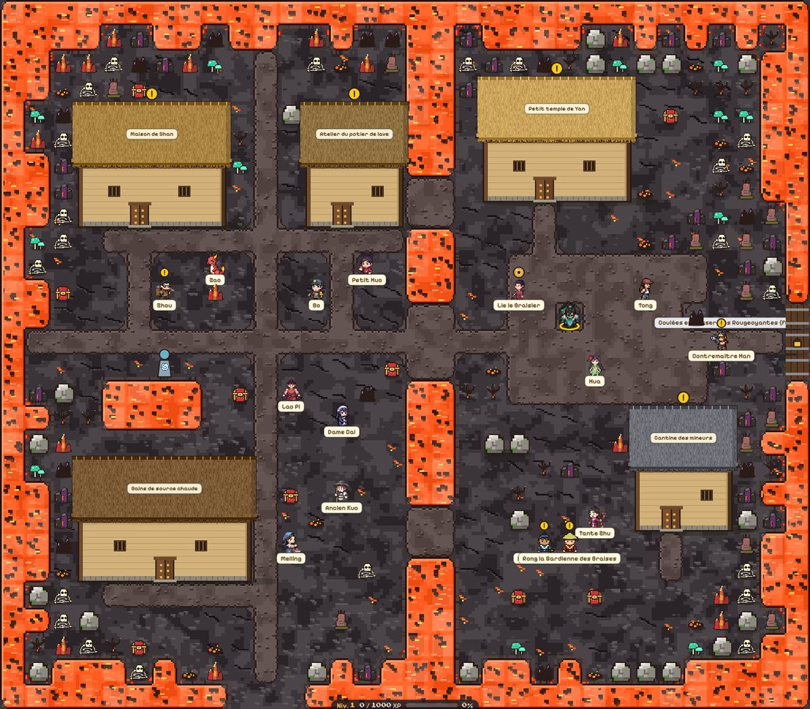
1234567| Où | Mène à | Accès |
|---|---|---|
| ↓ bord sud, à gauche (case 10, 27) — passage de 3 cases | Galerie de Basalte Route d’accès · on y arrive par le bord nord | libre |
| → bord est, au milieu (case 31, 13) — passage de 3 cases | Coulées et Passerelles Rougeoyantes Zone sauvage · on y arrive par le bord ouest | fermé tant que Le laissez-passer de basalte n’est pas accompli |
5 portes (maisons, grottes, escaliers)
| Où | Mène à | Accès |
|---|---|---|
| partie nord (case 21, 7) | Petit temple de Yan | libre |
| partie nord-ouest (case 5, 8) | Maison de Shan | libre |
| partie nord (case 13, 8) | Atelier du potier de lave | libre |
| partie sud-est (case 26, 20) | Cantine des mineurs | libre |
| partie sud-ouest (case 6, 22) | Bains de source chaude | libre |
Coulées et Passerelles Rougeoyantes Zone sauvage · 64 × 32 cases
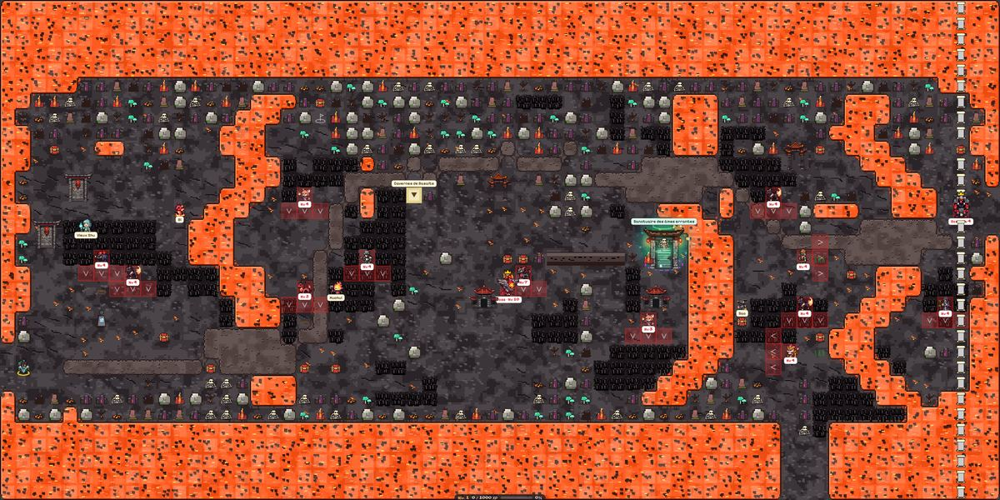
12345| Où | Mène à | Accès |
|---|---|---|
| ← bord ouest, en bas (case 0, 23) — passage de 3 cases | Hameau des Braises Sages Village · on y arrive par le bord est | libre |
| ↓ bord sud, à droite (case 51, 31) — passage de 3 cases | Sources Tièdes Hameau · on y arrive par le bord nord | libre |
| → bord est, au milieu (case 63, 13) — passage de 3 cases | Gorges du Volcan Sanctuaire du soleil · on y arrive par le bord ouest | fermé tant que vaincre Forgeron de lave n’est pas |
2 portes (maisons, grottes, escaliers)
| Où | Mène à | Accès |
|---|---|---|
| au centre (case 26, 12) | Cavernes de Basalte | libre |
| au centre (case 42, 16) | Le Royaume des âmes errantes | libre |
Sources Tièdes Hameau · 28 × 22 cases
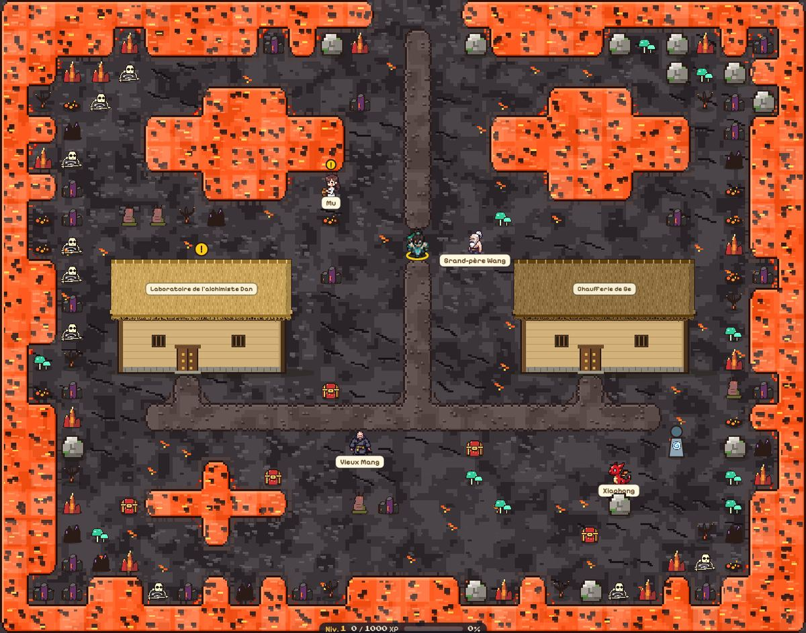
123| Où | Mène à | Accès |
|---|---|---|
| ↑ bord nord, au milieu (case 14, 0) — passage de 3 cases | Coulées et Passerelles Rougeoyantes Zone sauvage · on y arrive par le bord sud | libre |
2 portes (maisons, grottes, escaliers)
| Où | Mène à | Accès |
|---|---|---|
| partie ouest (case 6, 12) | Laboratoire de l'alchimiste Dan | libre |
| partie est (case 20, 12) | Chaufferie de Ge | libre |
Gorges du Volcan Sanctuaire du soleil · 30 × 22 cases
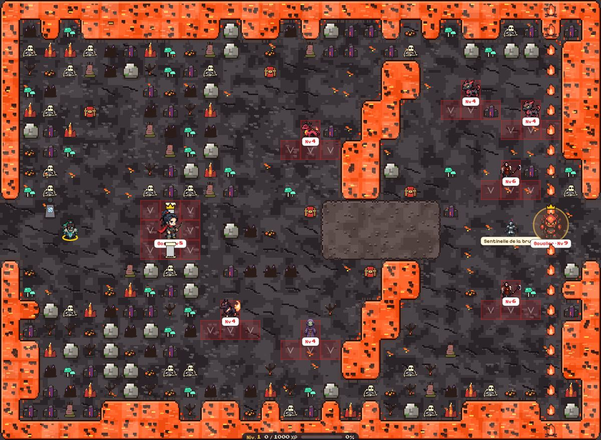
12| Où | Mène à | Accès |
|---|---|---|
| ← bord ouest, au milieu (case 0, 11) — passage de 3 cases | Coulées et Passerelles Rougeoyantes Zone sauvage · on y arrive par le bord est | libre |
| → bord est, au milieu (case 29, 11) — passage de 3 cases | Piste des Caravanes Route d’accès · on y arrive par le bord ouest | fermé tant que vaincre Soleil de Magma n’est pas |
Désert de Gobi
- Piste des Caravanes (Route d’accès) — sortie par le bord est →, au milieu, puis entrée dans Caravansérail de Yueya par son bord ouest
- Caravansérail de Yueya (Village) — sortie par le bord sud ↓, au milieu, puis entrée dans Dunes des Voix Sablées par son bord nord
- Dunes des Voix Sablées (Zone sauvage) — sortie par le bord est →, au milieu, puis entrée dans Désert de Gobi par son bord ouest
- Désert de Gobi (Sanctuaire du soleil)
Branche : le Oasis de Yuquan s’atteint par le bord sud de la zone sauvage (à gauche).
Piste des Caravanes Route d’accès · 64 × 24 cases
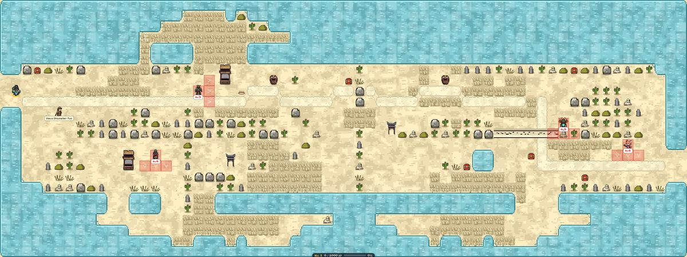
12| Où | Mène à | Accès |
|---|---|---|
| ← bord ouest, au milieu (case 0, 8) — passage de 3 cases | Gorges du Volcan Sanctuaire du soleil · on y arrive par le bord est | libre |
| → bord est, au milieu (case 63, 15) — passage de 3 cases | Caravansérail de Yueya Village · on y arrive par le bord ouest | libre |
| ↑ bord nord (tout le côté, c’est de la mer) | Piste des Troupeaux on y arrive par le bord sud | à pied sur l’eau, avec le Pas de Yu, une fois vaincre Soleil des Orages accompli |
Caravansérail de Yueya Village · 32 × 28 cases
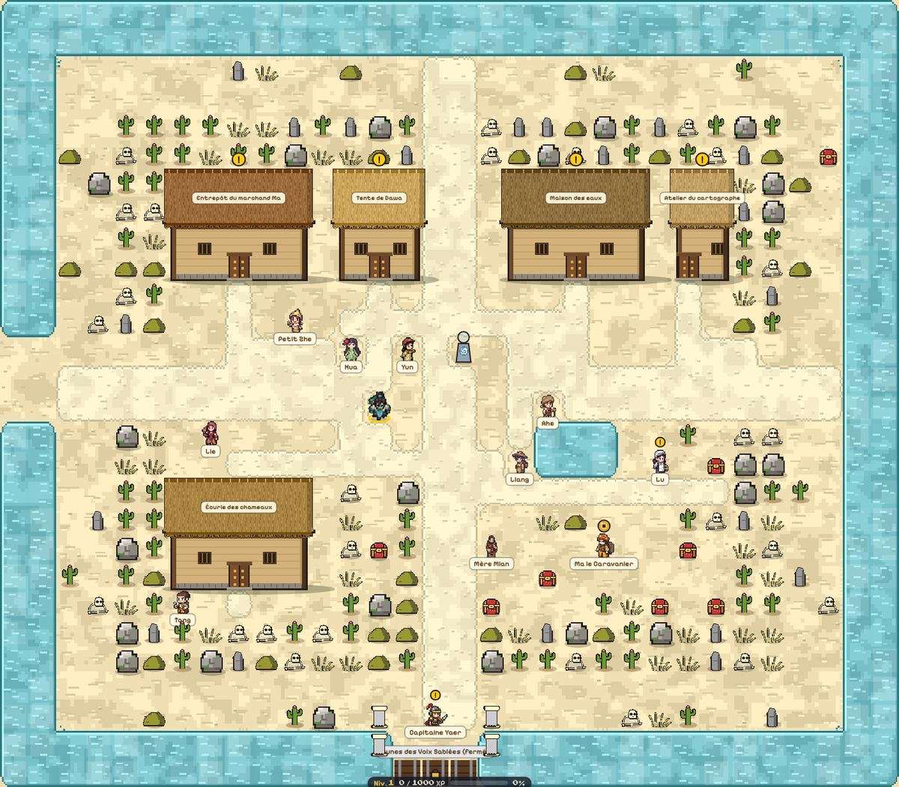
1234567| Où | Mène à | Accès |
|---|---|---|
| ← bord ouest, au milieu (case 0, 13) — passage de 3 cases | Piste des Caravanes Route d’accès · on y arrive par le bord est | libre |
| ↓ bord sud, au milieu (case 15, 27) — passage de 3 cases | Dunes des Voix Sablées Zone sauvage · on y arrive par le bord nord | fermé tant que Une gourde pour les dunes n’est pas accompli |
5 portes (maisons, grottes, escaliers)
| Où | Mène à | Accès |
|---|---|---|
| partie nord-ouest (case 8, 9) | Entrepôt du marchand Ma | libre |
| partie nord (case 13, 9) | Tente de Dawa | libre |
| partie nord (case 20, 9) | Maison des eaux | libre |
| partie nord-est (case 24, 9) | Atelier du cartographe | libre |
| partie sud-ouest (case 8, 20) | Écurie des chameaux | libre |
Dunes des Voix Sablées Zone sauvage · 64 × 32 cases
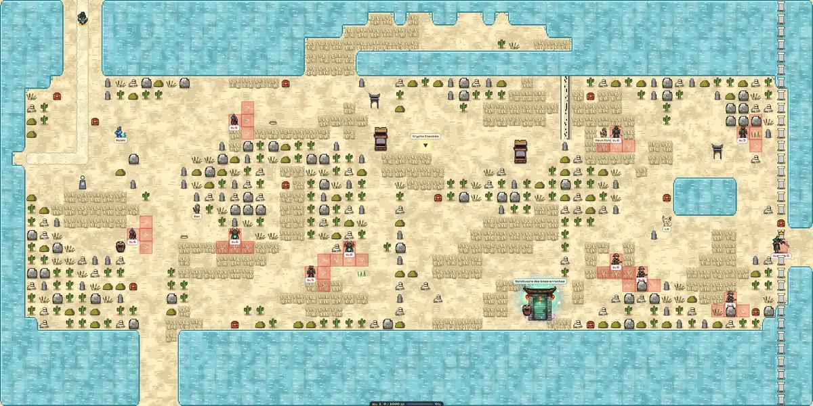
12345| Où | Mène à | Accès |
|---|---|---|
| ↑ bord nord, à gauche (case 6, 0) — passage de 3 cases | Caravansérail de Yueya Village · on y arrive par le bord sud | libre |
| ↓ bord sud, à gauche (case 12, 31) — passage de 3 cases | Oasis de Yuquan Hameau · on y arrive par le bord nord | libre |
| → bord est, au milieu (case 63, 19) — passage de 3 cases | Désert de Gobi Sanctuaire du soleil · on y arrive par le bord ouest | fermé tant que vaincre Chef de dune, Bras-de-Sable n’est pas |
2 portes (maisons, grottes, escaliers)
| Où | Mène à | Accès |
|---|---|---|
| au centre (case 33, 11) | Crypte Ensablée | libre |
| partie sud (case 42, 24) | Le Royaume des âmes errantes | libre |
Oasis de Yuquan Hameau · 28 × 22 cases
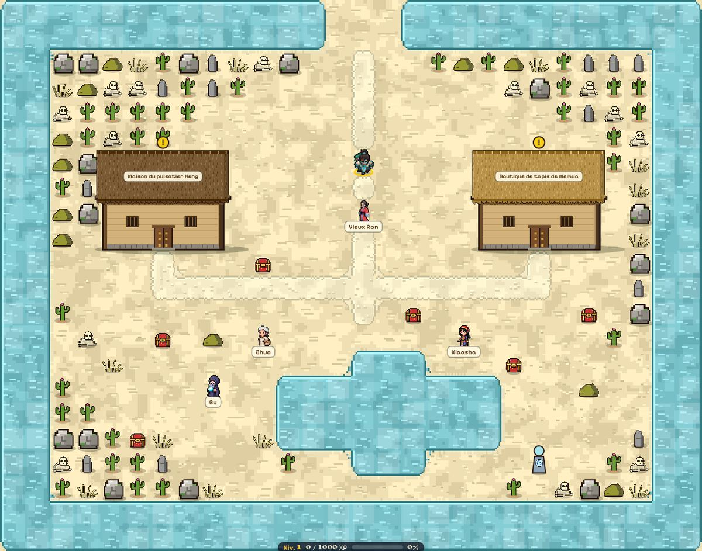
123| Où | Mène à | Accès |
|---|---|---|
| ↑ bord nord, au milieu (case 14, 0) — passage de 3 cases | Dunes des Voix Sablées Zone sauvage · on y arrive par le bord sud | libre |
2 portes (maisons, grottes, escaliers)
| Où | Mène à | Accès |
|---|---|---|
| partie ouest (case 6, 9) | Maison du puisatier Heng | libre |
| partie est (case 21, 9) | Boutique de tapis de Meihua | libre |
Désert de Gobi Sanctuaire du soleil · 30 × 22 cases
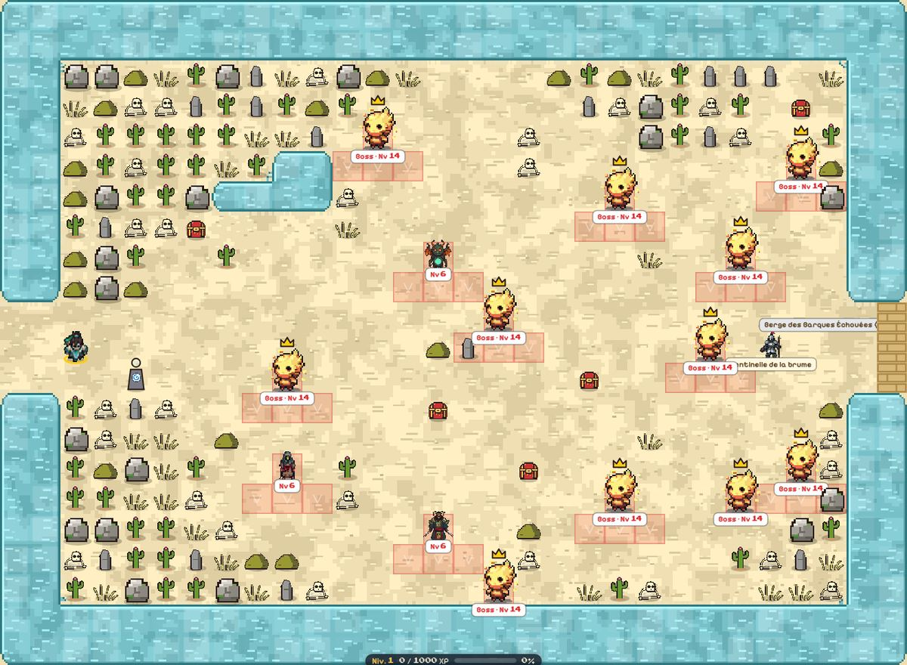
12| Où | Mène à | Accès |
|---|---|---|
| ← bord ouest, au milieu (case 0, 11) — passage de 3 cases | Dunes des Voix Sablées Zone sauvage · on y arrive par le bord est | libre |
| → bord est, au milieu (case 29, 11) — passage de 3 cases | Berge des Barques Échouées Route d’accès · on y arrive par le bord ouest | fermé tant que vaincre Soleil des Mirages n’est pas |
| ↑ bord nord (tout le côté, c’est de la mer) | Plaine des Fauves on y arrive par le bord sud | à pied sur l’eau, avec le Pas de Yu, une fois vaincre Soleil des Orages accompli |
Lit du Fleuve Jaune
- Berge des Barques Échouées (Route d’accès) — sortie par le bord nord ↑, à droite, puis entrée dans Port-à-Sec de Hekou par son bord sud
- Port-à-Sec de Hekou (Village) — sortie par le bord est →, au milieu, puis entrée dans Méandres de Boue et d'Écluses par son bord ouest
- Méandres de Boue et d'Écluses (Zone sauvage) — sortie par le bord est →, en bas, puis entrée dans Lit du Fleuve Jaune par son bord ouest
- Lit du Fleuve Jaune (Sanctuaire du soleil)
Branche : le Écluse-aux-Oies s’atteint par le bord sud de la zone sauvage (au milieu).
Berge des Barques Échouées Route d’accès · 64 × 24 cases
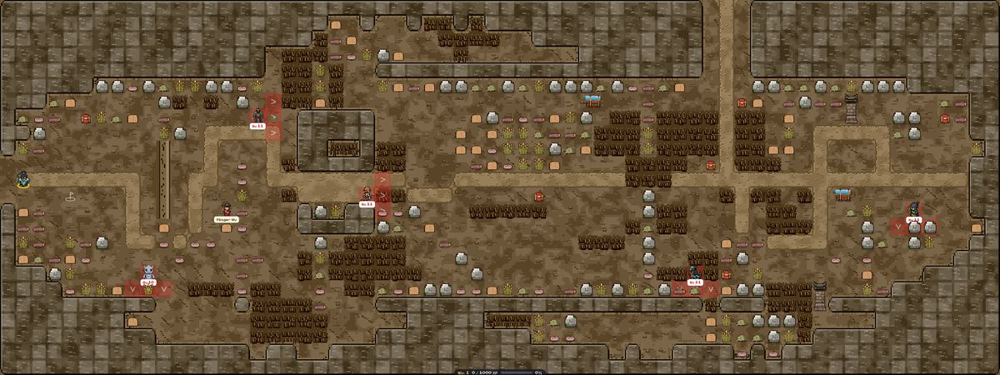
12| Où | Mène à | Accès |
|---|---|---|
| ← bord ouest, au milieu (case 0, 11) — passage de 3 cases | Désert de Gobi Sanctuaire du soleil · on y arrive par le bord est | libre |
| ↑ bord nord, à droite (case 46, 0) — passage de 3 cases | Port-à-Sec de Hekou Village · on y arrive par le bord sud | libre |
Port-à-Sec de Hekou Village · 32 × 28 cases
 1234567
1234567| Où | Mène à | Accès |
|---|---|---|
| ↓ bord sud, au milieu (case 15, 27) — passage de 3 cases | Berge des Barques Échouées Route d’accès · on y arrive par le bord nord | libre |
| → bord est, au milieu (case 31, 13) — passage de 3 cases | Méandres de Boue et d'Écluses Zone sauvage · on y arrive par le bord ouest | fermé tant que Le sceau de la passerelle n’est pas accompli |
| ↑ bord nord (tout le côté, c’est de la mer) | Village des Cent Tiges on y arrive par le bord sud | à pied sur l’eau, avec le Pas de Yu, une fois vaincre Soleil des Eaux Taries accompli |
5 portes (maisons, grottes, escaliers)
| Où | Mène à | Accès |
|---|---|---|
| partie nord-ouest (case 6, 6) | Cabane du passeur Gu | libre |
| partie nord (case 14, 6) | Atelier de Mei | libre |
| partie nord-est (case 22, 6) | Entrepôt de sel de Hu | libre |
| partie sud-ouest (case 7, 21) | Échoppe de l'écrivain public | libre |
| partie sud-est (case 23, 21) | Mare de la Tortue Gui | libre |
Méandres de Boue et d'Écluses Zone sauvage · 64 × 32 cases
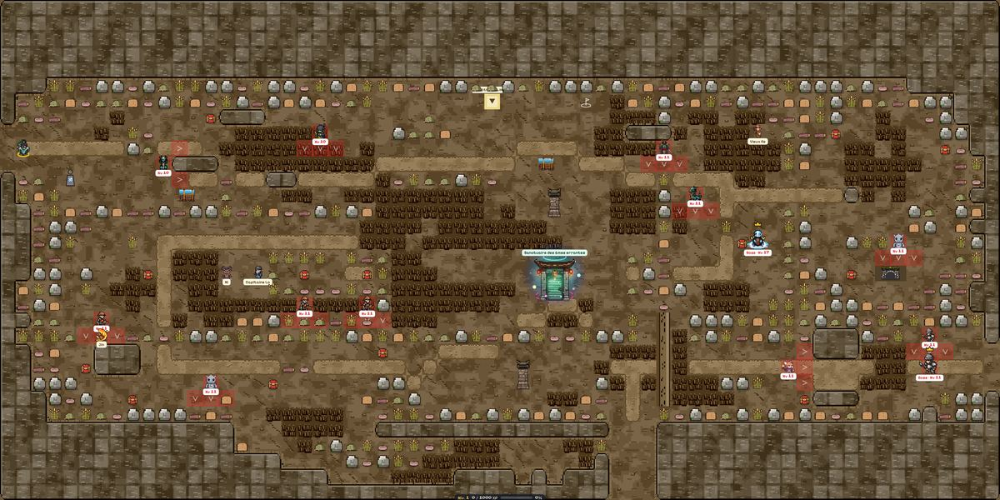
12345| Où | Mène à | Accès |
|---|---|---|
| ← bord ouest, en haut (case 0, 9) — passage de 3 cases | Port-à-Sec de Hekou Village · on y arrive par le bord est | libre |
| ↓ bord sud, au milieu (case 40, 31) — passage de 3 cases | Écluse-aux-Oies Hameau · on y arrive par le bord nord | libre |
| → bord est, en bas (case 63, 23) — passage de 3 cases | Lit du Fleuve Jaune Sanctuaire du soleil · on y arrive par le bord ouest | fermé tant que sluice_key_chest n’est pas accompli |
| ↑ bord nord (tout le côté, c’est de la mer) | Clairière des Lampions on y arrive par le bord sud | à pied sur l’eau, avec le Pas de Yu, une fois vaincre Soleil des Eaux Taries accompli |
2 portes (maisons, grottes, escaliers)
| Où | Mène à | Accès |
|---|---|---|
| partie nord (case 31, 6) | Grotte des Limons | libre |
| au centre (case 35, 18) | Le Royaume des âmes errantes | libre |
Écluse-aux-Oies Hameau · 28 × 22 cases
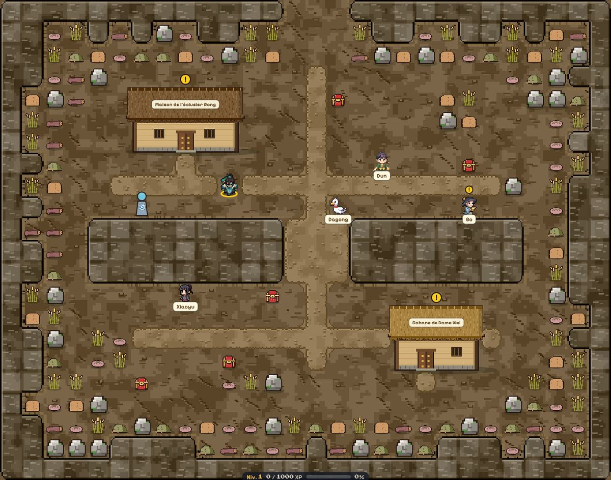
123| Où | Mène à | Accès |
|---|---|---|
| ↑ bord nord, au milieu (case 14, 0) — passage de 3 cases | Méandres de Boue et d'Écluses Zone sauvage · on y arrive par le bord sud | libre |
2 portes (maisons, grottes, escaliers)
| Où | Mène à | Accès |
|---|---|---|
| partie nord-ouest (case 8, 6) | Maison de l'éclusier Rong | libre |
| partie sud-est (case 19, 16) | Cabane de Dame Wei | libre |
Lit du Fleuve Jaune Sanctuaire du soleil · 30 × 22 cases
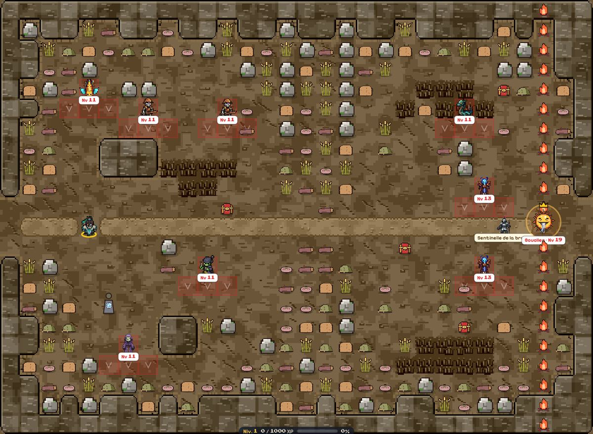
12| Où | Mène à | Accès |
|---|---|---|
| ← bord ouest, au milieu (case 0, 11) — passage de 3 cases | Méandres de Boue et d'Écluses Zone sauvage · on y arrive par le bord est | libre |
| → bord est, au milieu (case 29, 11) — passage de 3 cases | Sentier des Moines Route d’accès · on y arrive par le bord ouest | fermé tant que vaincre Soleil des Eaux Taries n’est pas |
| ↑ bord nord (tout le côté, c’est de la mer) | Forêt de Bambous Calcinée on y arrive par le bord sud | à pied sur l’eau, avec le Pas de Yu, une fois vaincre Soleil des Eaux Taries accompli |
Forêt de Bambous Calcinée
- Sentier des Moines (Route d’accès) — sortie par le bord sud ↓, à droite, puis entrée dans Village des Cent Tiges par son bord nord
- Village des Cent Tiges (Village) — sortie par le bord est →, au milieu, puis entrée dans Sentier des Tiges Cendrées par son bord ouest
- Sentier des Tiges Cendrées (Zone sauvage) — sortie par le bord est →, en haut, puis entrée dans Forêt de Bambous Calcinée par son bord ouest
- Forêt de Bambous Calcinée (Sanctuaire du soleil)
Branche : le Clairière des Lampions s’atteint par le bord sud de la zone sauvage (au milieu).
Sentier des Moines Route d’accès · 64 × 24 cases
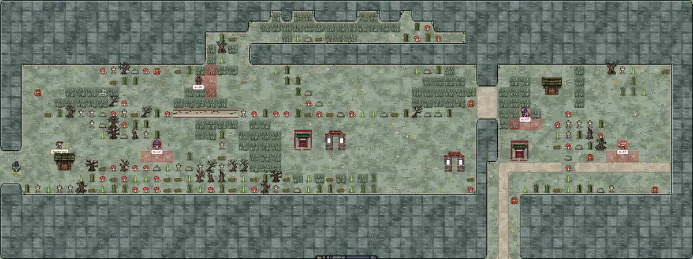
12| Où | Mène à | Accès |
|---|---|---|
| ← bord ouest, au milieu (case 0, 15) — passage de 3 cases | Lit du Fleuve Jaune Sanctuaire du soleil · on y arrive par le bord est | libre |
| ↓ bord sud, à droite (case 46, 23) — passage de 3 cases | Village des Cent Tiges Village · on y arrive par le bord nord | libre |
| ↑ bord nord (tout le côté, c’est de la mer) | Escalier des Crêtes on y arrive par le bord sud | à pied sur l’eau, avec le Pas de Yu, une fois vaincre Soleil de Cendres accompli |
Village des Cent Tiges Village · 32 × 28 cases
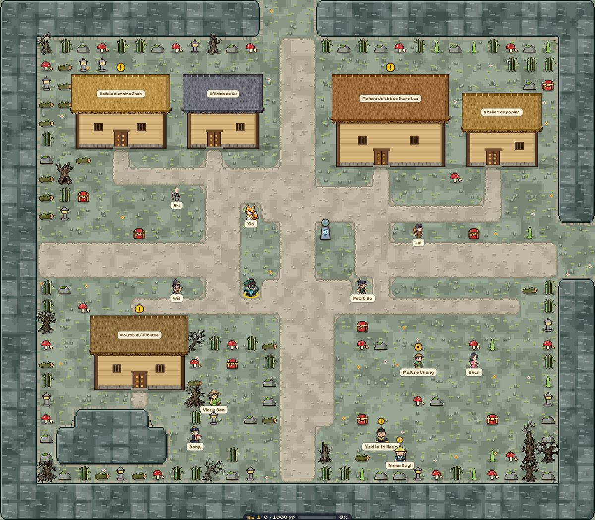
1234567| Où | Mène à | Accès |
|---|---|---|
| ↑ bord nord, au milieu (case 15, 0) — passage de 3 cases | Sentier des Moines Route d’accès · on y arrive par le bord sud | libre |
| → bord est, au milieu (case 31, 13) — passage de 3 cases | Sentier des Tiges Cendrées Zone sauvage · on y arrive par le bord ouest | libre |
| ↓ bord sud (tout le côté, c’est de la mer) | Port-à-Sec de Hekou on y arrive par le bord nord | à pied sur l’eau, avec le Pas de Yu, une fois vaincre Soleil des Eaux Taries accompli |
5 portes (maisons, grottes, escaliers)
| Où | Mène à | Accès |
|---|---|---|
| partie nord-ouest (case 6, 7) | Cellule du moine Zhen | libre |
| partie nord (case 11, 7) | Officine de Xu | libre |
| partie nord (case 20, 8) | Maison de thé de Dame Lan | libre |
| partie nord-est (case 26, 8) | Atelier de papier | libre |
| partie sud-ouest (case 7, 20) | Maison du flûtiste | libre |
Sentier des Tiges Cendrées Zone sauvage · 64 × 32 cases
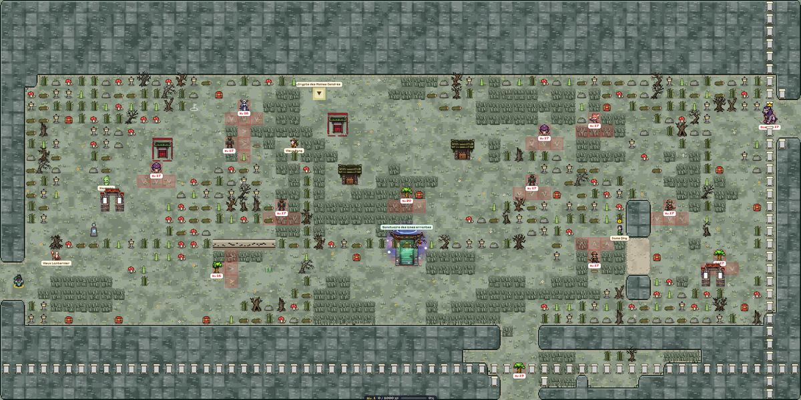
12345| Où | Mène à | Accès |
|---|---|---|
| ← bord ouest, en bas (case 0, 22) — passage de 3 cases | Village des Cent Tiges Village · on y arrive par le bord est | libre |
| ↓ bord sud, au milieu (case 41, 31) — passage de 3 cases | Clairière des Lampions Hameau · on y arrive par le bord nord | fermé tant que vaincre Vieux bambou, gardien du hameau n’est pas |
| → bord est, en haut (case 63, 9) — passage de 3 cases | Forêt de Bambous Calcinée Sanctuaire du soleil · on y arrive par le bord ouest | fermé tant que vaincre Gardien des cendres n’est pas |
| ↑ bord nord (tout le côté, c’est de la mer) | Refuge des Trois Cairns on y arrive par le bord sud | à pied sur l’eau, avec le Pas de Yu, une fois vaincre Soleil de Cendres accompli |
2 portes (maisons, grottes, escaliers)
| Où | Mène à | Accès |
|---|---|---|
| partie nord (case 25, 7) | Crypte des Moines Cendrés | libre |
| au centre (case 32, 20) | Le Royaume des âmes errantes | libre |
Clairière des Lampions Hameau · 28 × 22 cases
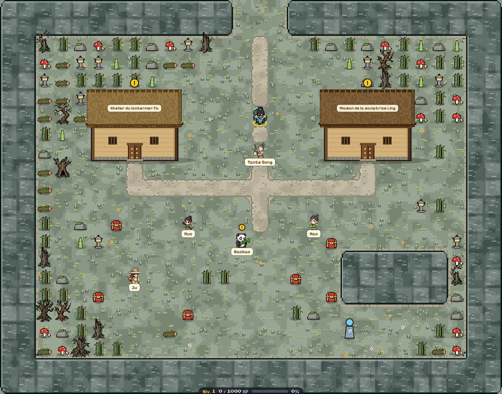
123| Où | Mène à | Accès |
|---|---|---|
| ↑ bord nord, au milieu (case 14, 0) — passage de 3 cases | Sentier des Tiges Cendrées Zone sauvage · on y arrive par le bord sud | libre |
| ↓ bord sud (tout le côté, c’est de la mer) | Méandres de Boue et d'Écluses on y arrive par le bord nord | à pied sur l’eau, avec le Pas de Yu, une fois vaincre Soleil des Eaux Taries accompli |
2 portes (maisons, grottes, escaliers)
| Où | Mène à | Accès |
|---|---|---|
| partie ouest (case 7, 8) | Atelier du lanternier Fa | libre |
| partie est (case 20, 8) | Maison de la sculptrice Ling | libre |
Forêt de Bambous Calcinée Sanctuaire du soleil · 30 × 22 cases
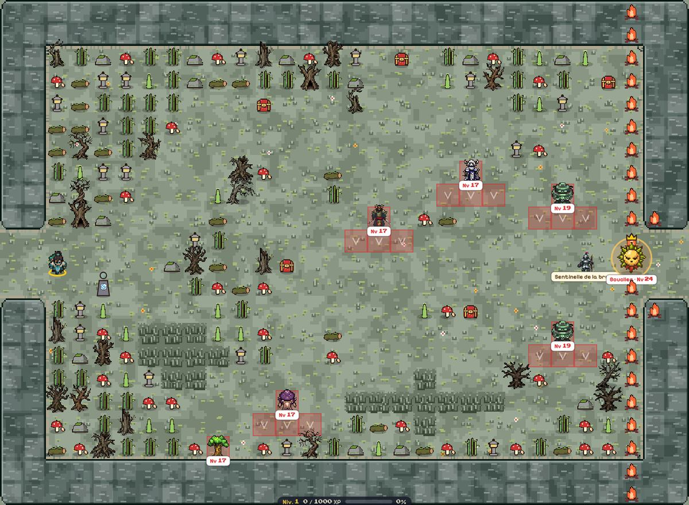
12| Où | Mène à | Accès |
|---|---|---|
| ← bord ouest, au milieu (case 0, 11) — passage de 3 cases | Sentier des Tiges Cendrées Zone sauvage · on y arrive par le bord est | libre |
| → bord est, au milieu (case 29, 11) — passage de 3 cases | Escalier des Crêtes Route d’accès · on y arrive par le bord ouest | fermé tant que vaincre Soleil de Cendres n’est pas |
| ↑ bord nord (tout le côté, c’est de la mer) | Monts du Tonnerre on y arrive par le bord sud | à pied sur l’eau, avec le Pas de Yu, une fois vaincre Soleil de Cendres accompli |
| ↓ bord sud (tout le côté, c’est de la mer) | Lit du Fleuve Jaune on y arrive par le bord nord | à pied sur l’eau, avec le Pas de Yu, une fois vaincre Soleil des Eaux Taries accompli |
Monts du Tonnerre
- Escalier des Crêtes (Route d’accès) — sortie par le bord est →, au milieu, puis entrée dans Village des Forges-Éclairs par son bord ouest
- Village des Forges-Éclairs (Village) — sortie par le bord est →, au milieu, puis entrée dans Crêtes Foudroyées par son bord ouest
- Crêtes Foudroyées (Zone sauvage) — sortie par le bord est →, en haut, puis entrée dans Monts du Tonnerre par son bord ouest
- Monts du Tonnerre (Sanctuaire du soleil)
Branche : le Refuge des Trois Cairns s’atteint par le bord sud de la zone sauvage (à droite).
Escalier des Crêtes Route d’accès · 64 × 24 cases
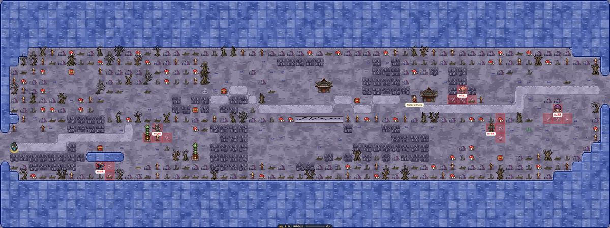
12| Où | Mène à | Accès |
|---|---|---|
| ← bord ouest, au milieu (case 0, 15) — passage de 3 cases | Forêt de Bambous Calcinée Sanctuaire du soleil · on y arrive par le bord est | libre |
| → bord est, au milieu (case 63, 9) — passage de 3 cases | Village des Forges-Éclairs Village · on y arrive par le bord ouest | libre |
| ↓ bord sud (tout le côté, c’est de la mer) | Sentier des Moines on y arrive par le bord nord | à pied sur l’eau, avec le Pas de Yu, une fois vaincre Soleil de Cendres accompli |
Village des Forges-Éclairs Village · 32 × 28 cases
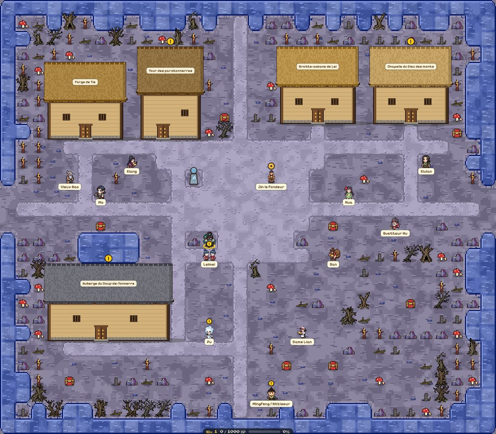
1234567| Où | Mène à | Accès |
|---|---|---|
| ← bord ouest, au milieu (case 0, 13) — passage de 3 cases | Escalier des Crêtes Route d’accès · on y arrive par le bord est | libre |
| → bord est, au milieu (case 31, 13) — passage de 3 cases | Crêtes Foudroyées Zone sauvage · on y arrive par le bord ouest | libre |
5 portes (maisons, grottes, escaliers)
| Où | Mène à | Accès |
|---|---|---|
| partie nord-ouest (case 10, 8) | Tour des paratonnerres | libre |
| partie nord (case 20, 7) | Grotte-cabane de Lei | libre |
| partie nord-est (case 26, 7) | Chapelle du Dieu des monts | libre |
| partie nord-ouest (case 5, 8) | Forge de Tie | libre |
| partie sud-ouest (case 6, 21) | Auberge du Coup-de-Tonnerre | libre |
Crêtes Foudroyées Zone sauvage · 64 × 32 cases
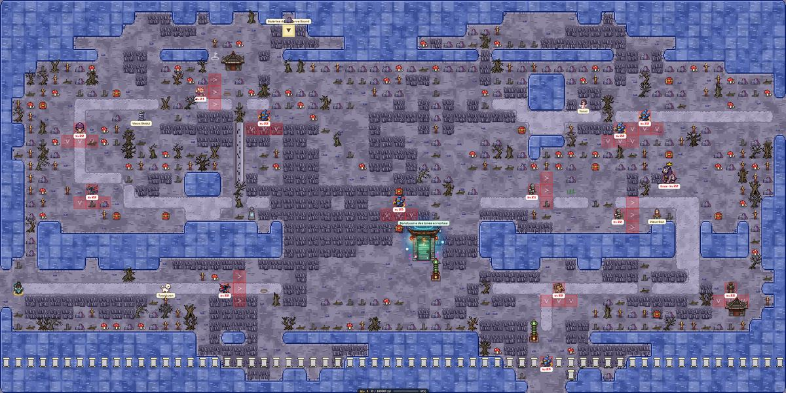
12345| Où | Mène à | Accès |
|---|---|---|
| ← bord ouest, en bas (case 0, 23) — passage de 3 cases | Village des Forges-Éclairs Village · on y arrive par le bord est | libre |
| ↓ bord sud, à droite (case 44, 31) — passage de 3 cases | Refuge des Trois Cairns Hameau · on y arrive par le bord nord | fermé tant que vaincre Cavalier de l'orage égaré n’est pas |
| → bord est, en haut (case 63, 9) — passage de 3 cases | Monts du Tonnerre Sanctuaire du soleil · on y arrive par le bord ouest | fermé tant que storm_gong_chest n’est pas accompli |
2 portes (maisons, grottes, escaliers)
| Où | Mène à | Accès |
|---|---|---|
| partie nord (case 23, 2) | Galeries du Tonnerre Sourd | libre |
| au centre (case 34, 20) | Le Royaume des âmes errantes | libre |
Refuge des Trois Cairns Hameau · 28 × 22 cases
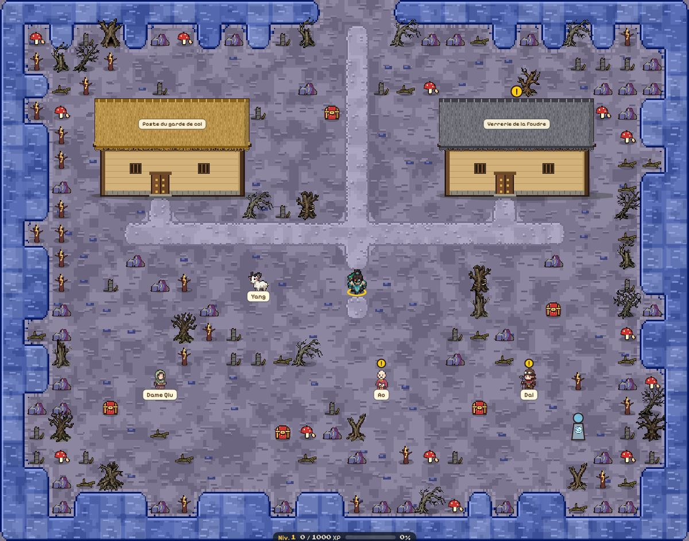
123| Où | Mène à | Accès |
|---|---|---|
| ↑ bord nord, au milieu (case 14, 0) — passage de 3 cases | Crêtes Foudroyées Zone sauvage · on y arrive par le bord sud | libre |
| ↓ bord sud (tout le côté, c’est de la mer) | Sentier des Tiges Cendrées on y arrive par le bord nord | à pied sur l’eau, avec le Pas de Yu, une fois vaincre Soleil de Cendres accompli |
2 portes (maisons, grottes, escaliers)
| Où | Mène à | Accès |
|---|---|---|
| partie nord-ouest (case 6, 7) | Poste du garde de col | libre |
| partie nord-est (case 20, 7) | Verrerie de la foudre | libre |
Monts du Tonnerre Sanctuaire du soleil · 30 × 22 cases
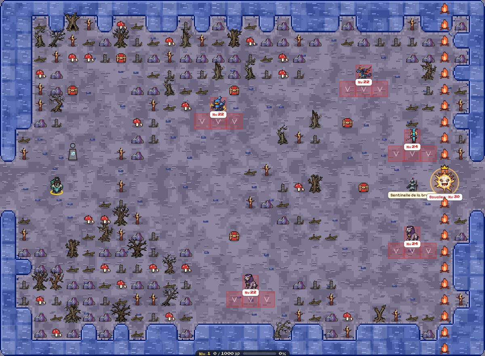
12| Où | Mène à | Accès |
|---|---|---|
| ← bord ouest, au milieu (case 0, 11) — passage de 3 cases | Crêtes Foudroyées Zone sauvage · on y arrive par le bord est | libre |
| → bord est, au milieu (case 29, 11) — passage de 3 cases | Piste des Troupeaux Route d’accès · on y arrive par le bord ouest | fermé tant que vaincre Soleil des Orages n’est pas |
| ↓ bord sud (tout le côté, c’est de la mer) | Forêt de Bambous Calcinée on y arrive par le bord nord | à pied sur l’eau, avec le Pas de Yu, une fois vaincre Soleil de Cendres accompli |
Plaine des Fauves
- Piste des Troupeaux (Route d’accès) — sortie par le bord nord ↑, à droite, puis entrée dans Enclos de Caoyuan par son bord sud
- Enclos de Caoyuan (Village) — sortie par le bord est →, au milieu, puis entrée dans Hautes Herbes de Cendre par son bord ouest
- Hautes Herbes de Cendre (Zone sauvage) — sortie par le bord est →, en bas, puis entrée dans Plaine des Fauves par son bord ouest
- Plaine des Fauves (Sanctuaire du soleil)
Branche : le Campement des Vents s’atteint par le bord sud de la zone sauvage (à droite).
Piste des Troupeaux Route d’accès · 64 × 24 cases
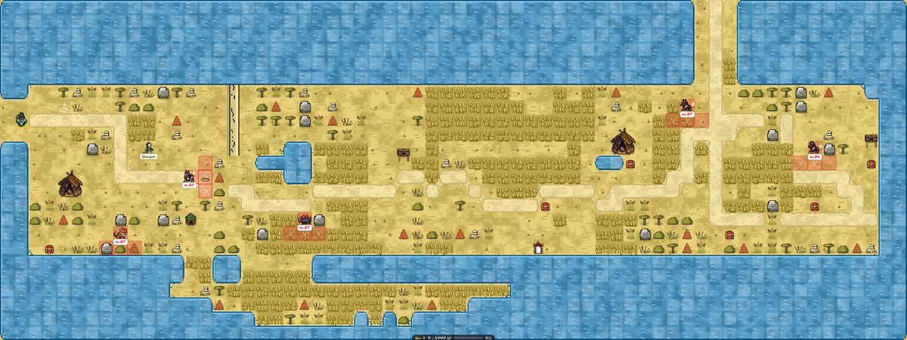
12| Où | Mène à | Accès |
|---|---|---|
| ← bord ouest, au milieu (case 0, 8) — passage de 3 cases | Monts du Tonnerre Sanctuaire du soleil · on y arrive par le bord est | libre |
| ↑ bord nord, à droite (case 50, 0) — passage de 3 cases | Enclos de Caoyuan Village · on y arrive par le bord sud | libre |
| ↓ bord sud (tout le côté, c’est de la mer) | Piste des Caravanes on y arrive par le bord nord | à pied sur l’eau, avec le Pas de Yu, une fois vaincre Soleil des Orages accompli |
Enclos de Caoyuan Village · 32 × 28 cases
 1234567
1234567| Où | Mène à | Accès |
|---|---|---|
| ↓ bord sud, au milieu (case 15, 27) — passage de 3 cases | Piste des Troupeaux Route d’accès · on y arrive par le bord nord | libre |
| → bord est, au milieu (case 31, 15) — passage de 3 cases | Hautes Herbes de Cendre Zone sauvage · on y arrive par le bord ouest | libre |
5 portes (maisons, grottes, escaliers)
| Où | Mène à | Accès |
|---|---|---|
| partie nord-ouest (case 5, 7) | Pavillon du chasseur Wu | libre |
| partie nord (case 12, 7) | Yourte de Zi | libre |
| partie nord (case 21, 7) | Écurie des chevaux célestes | libre |
| partie ouest (case 5, 14) | Tente de la chamane | libre |
| partie est (case 26, 14) | Fromagerie de Dame Sa | libre |
Hautes Herbes de Cendre Zone sauvage · 64 × 32 cases
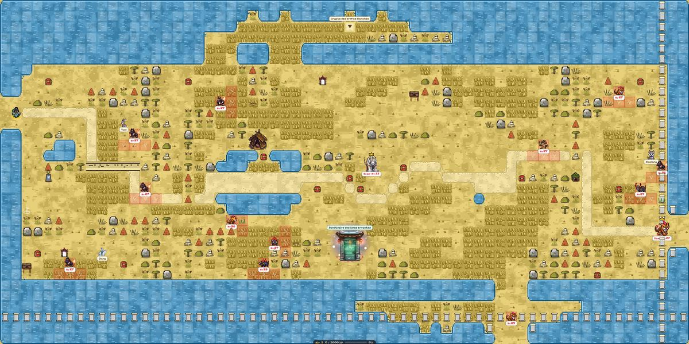
12345| Où | Mène à | Accès |
|---|---|---|
| ← bord ouest, en haut (case 0, 10) — passage de 3 cases | Enclos de Caoyuan Village · on y arrive par le bord est | libre |
| ↓ bord sud, à droite (case 47, 31) — passage de 3 cases | Campement des Vents Hameau · on y arrive par le bord nord | fermé tant que vaincre Tigresse blanche des pâtures n’est pas |
| → bord est, en bas (case 63, 21) — passage de 3 cases | Plaine des Fauves Sanctuaire du soleil · on y arrive par le bord ouest | fermé tant que vaincre Tigre alpha, Griffe-de-Feu n’est pas |
2 portes (maisons, grottes, escaliers)
| Où | Mène à | Accès |
|---|---|---|
| partie nord (case 32, 2) | Crypte des Griffes Blanches | libre |
| partie sud (case 32, 23) | Le Royaume des âmes errantes | libre |
Campement des Vents Hameau · 28 × 22 cases
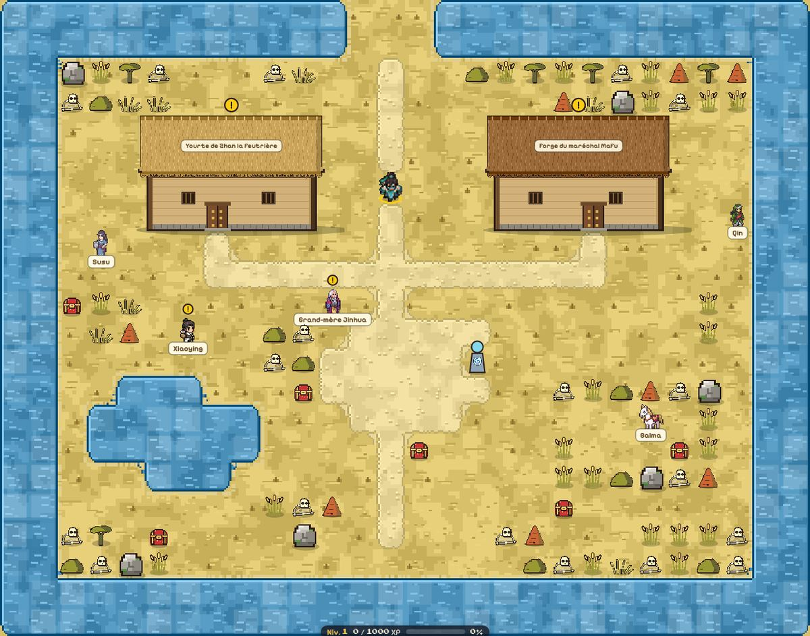
123| Où | Mène à | Accès |
|---|---|---|
| ↑ bord nord, au milieu (case 13, 0) — passage de 3 cases | Hautes Herbes de Cendre Zone sauvage · on y arrive par le bord sud | libre |
2 portes (maisons, grottes, escaliers)
| Où | Mène à | Accès |
|---|---|---|
| partie nord-ouest (case 7, 7) | Yourte de Zhan la feutrière | libre |
| partie nord-est (case 20, 7) | Forge du maréchal Mafu | libre |
Plaine des Fauves Sanctuaire du soleil · 30 × 22 cases
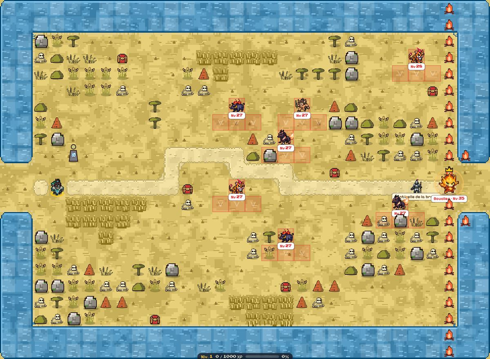
12| Où | Mène à | Accès |
|---|---|---|
| ← bord ouest, au milieu (case 0, 11) — passage de 3 cases | Hautes Herbes de Cendre Zone sauvage · on y arrive par le bord est | libre |
| → bord est, au milieu (case 29, 11) — passage de 3 cases | Jetée des Écumeurs Route d’accès · on y arrive par le bord ouest | fermé tant que vaincre Soleil des Bêtes Folles n’est pas |
| ↓ bord sud (tout le côté, c’est de la mer) | Désert de Gobi on y arrive par le bord nord | à pied sur l’eau, avec le Pas de Yu, une fois vaincre Soleil des Orages accompli |
Rivage de la Mer Orientale
- Jetée des Écumeurs (Route d’accès) — sortie par le bord est →, au milieu, puis entrée dans Port aux Perles de Haiyan par son bord ouest
- Port aux Perles de Haiyan (Village) — sortie par le bord sud ↓, au milieu, puis entrée dans Falaises et Criques du Dragon par son bord nord
- Falaises et Criques du Dragon (Zone sauvage) — sortie par le bord est →, en bas, puis entrée dans Rivage de la Mer Orientale par son bord ouest
- Rivage de la Mer Orientale (Sanctuaire du soleil)
Branche : le Anse des Coquillages s’atteint par le bord sud de la zone sauvage (à droite).
Jetée des Écumeurs Route d’accès · 64 × 24 cases
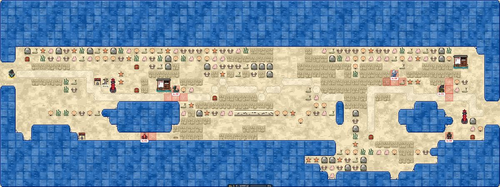
12| Où | Mène à | Accès |
|---|---|---|
| ← bord ouest, au milieu (case 0, 9) — passage de 3 cases | Plaine des Fauves Sanctuaire du soleil · on y arrive par le bord est | libre |
| → bord est, au milieu (case 63, 14) — passage de 3 cases | Port aux Perles de Haiyan Village · on y arrive par le bord ouest | libre |
Port aux Perles de Haiyan Village · 32 × 28 cases
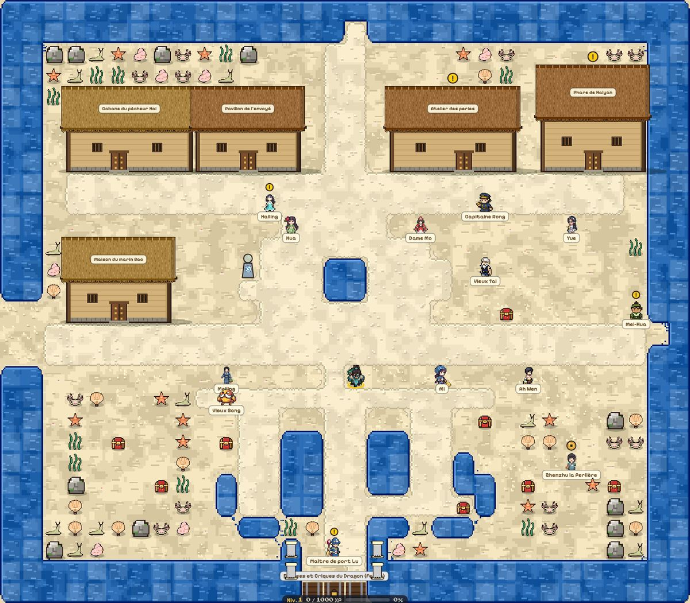
1234567| Où | Mène à | Accès |
|---|---|---|
| ← bord ouest, au milieu (case 0, 15) — passage de 3 cases | Jetée des Écumeurs Route d’accès · on y arrive par le bord est | libre |
| ↓ bord sud, au milieu (case 15, 27) — passage de 3 cases | Falaises et Criques du Dragon Zone sauvage · on y arrive par le bord nord | fermé tant que La boussole de jade n’est pas accompli |
| ↑ bord nord (tout le côté, c’est de la mer) | Terrasses de Fusang-le-Bas on y arrive par le bord sud | à pied sur l’eau, avec le Pas de Yu, une fois vaincre Soleil des Marées accompli |
5 portes (maisons, grottes, escaliers)
| Où | Mène à | Accès |
|---|---|---|
| partie nord-est (case 27, 7) | Phare de Haiyan | libre |
| partie nord-ouest (case 5, 7) | Cabane du pêcheur Hai | libre |
| partie nord (case 11, 7) | Pavillon de l'envoyé | libre |
| partie nord (case 21, 7) | Atelier des perles | libre |
| partie ouest (case 5, 14) | Maison du marin Bao | libre |
Falaises et Criques du Dragon Zone sauvage · 64 × 32 cases
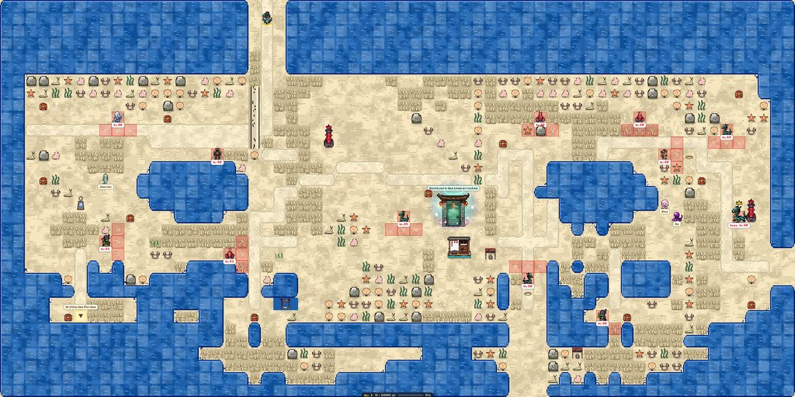
12345| Où | Mène à | Accès |
|---|---|---|
| ↑ bord nord, à gauche (case 21, 0) — passage de 3 cases | Port aux Perles de Haiyan Village · on y arrive par le bord sud | libre |
| ↓ bord sud, à droite (case 42, 31) — passage de 3 cases | Anse des Coquillages Hameau · on y arrive par le bord nord | libre |
| → bord est, en bas (case 63, 21) — passage de 3 cases | Rivage de la Mer Orientale Sanctuaire du soleil · on y arrive par le bord ouest | fermé tant que tide_key_chest n’est pas accompli |
2 portes (maisons, grottes, escaliers)
| Où | Mène à | Accès |
|---|---|---|
| partie sud-ouest (case 6, 25) | Grotte des Marées | libre |
| au centre (case 36, 17) | Le Royaume des âmes errantes | libre |
Anse des Coquillages Hameau · 28 × 22 cases
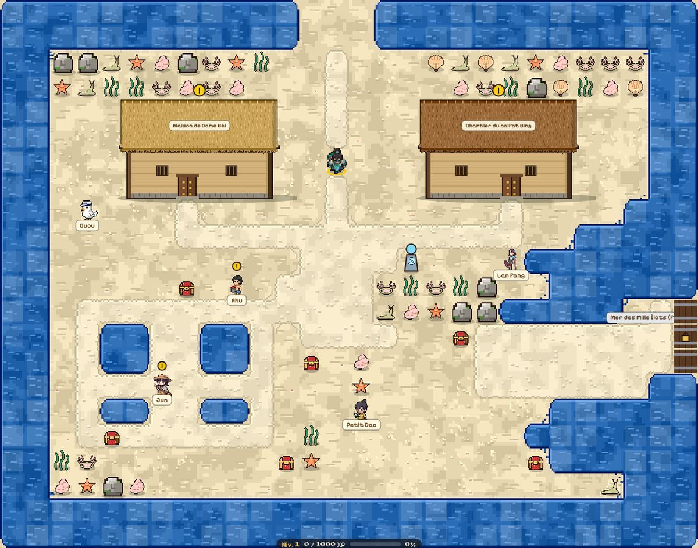
1234| Où | Mène à | Accès |
|---|---|---|
| ↑ bord nord, au milieu (case 13, 0) — passage de 3 cases | Falaises et Criques du Dragon Zone sauvage · on y arrive par le bord sud | libre |
| → bord est, au milieu (case 27, 13) — passage de 3 cases | Mer des Mille Îlots Sanctuaire du soleil · on y arrive par le bord ouest | fermé tant que Le Pas de Yu n’est pas accompli |
2 portes (maisons, grottes, escaliers)
| Où | Mène à | Accès |
|---|---|---|
| partie nord-ouest (case 7, 7) | Maison de Dame Bei | libre |
| partie nord-est (case 20, 7) | Chantier du calfat Bing | libre |
Rivage de la Mer Orientale Sanctuaire du soleil · 30 × 22 cases
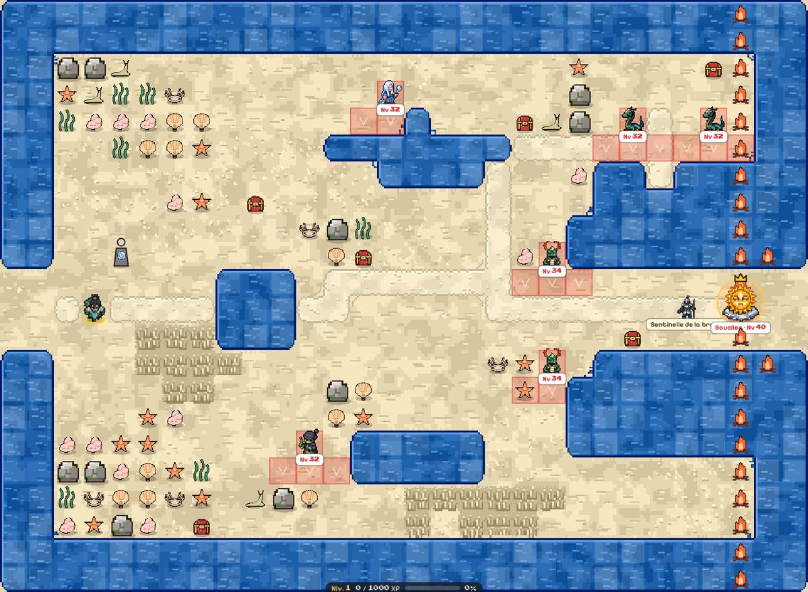
12| Où | Mène à | Accès |
|---|---|---|
| ← bord ouest, au milieu (case 0, 11) — passage de 3 cases | Falaises et Criques du Dragon Zone sauvage · on y arrive par le bord est | libre |
| → bord est, au milieu (case 29, 11) — passage de 3 cases | Chemin des Racines Géantes Route d’accès · on y arrive par le bord ouest | fermé tant que vaincre Soleil des Marées n’est pas |
| ↑ bord nord (tout le côté, c’est de la mer) | Cime du Fusang on y arrive par le bord sud | à pied sur l’eau, avec le Pas de Yu, une fois vaincre Soleil des Marées accompli |
Cime du Fusang
- Chemin des Racines Géantes (Route d’accès) — sortie par le bord sud ↓, à droite, puis entrée dans Terrasses de Fusang-le-Bas par son bord nord
- Terrasses de Fusang-le-Bas (Village) — sortie par le bord est →, au milieu, puis entrée dans Racines et Branches Dorées par son bord ouest
- Racines et Branches Dorées (Zone sauvage) — sortie par le bord est →, en haut, puis entrée dans Cime du Fusang par son bord ouest
- Cime du Fusang (Sanctuaire du soleil)
Branche : le Perchoir des Grues s’atteint par le bord sud de la zone sauvage (à droite).
Chemin des Racines Géantes Route d’accès · 64 × 24 cases
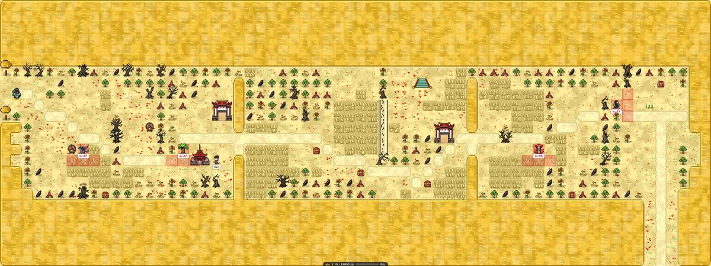
12| Où | Mène à | Accès |
|---|---|---|
| ← bord ouest, au milieu (case 0, 8) — passage de 3 cases | Rivage de la Mer Orientale Sanctuaire du soleil · on y arrive par le bord est | libre |
| ↓ bord sud, à droite (case 59, 23) — passage de 3 cases | Terrasses de Fusang-le-Bas Village · on y arrive par le bord nord | libre |
Terrasses de Fusang-le-Bas Village · 32 × 28 cases
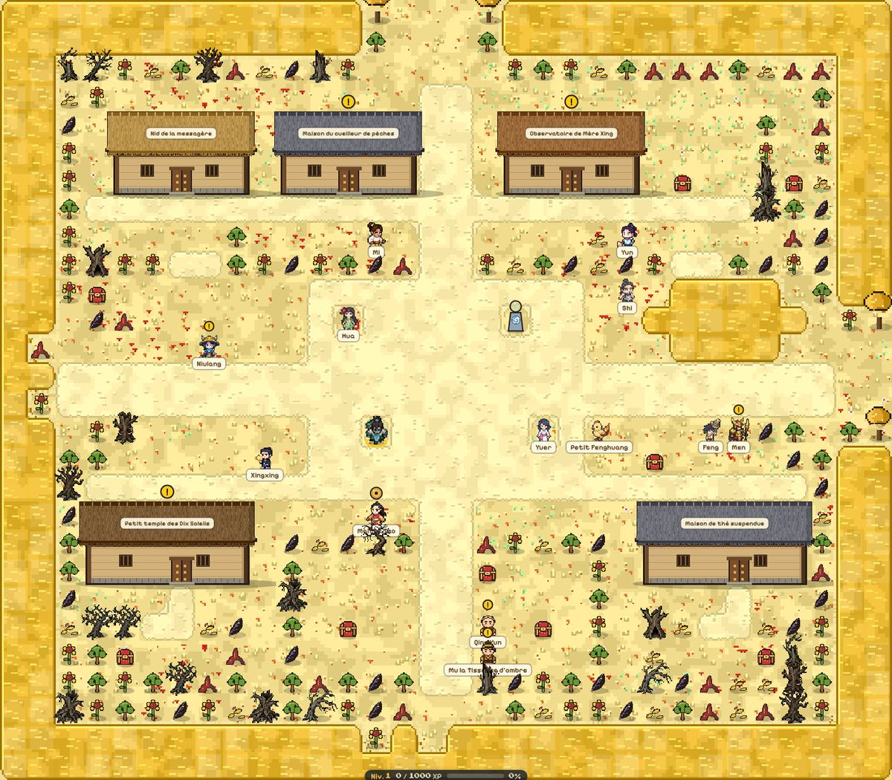
1234567| Où | Mène à | Accès |
|---|---|---|
| ↑ bord nord, au milieu (case 15, 0) — passage de 3 cases | Chemin des Racines Géantes Route d’accès · on y arrive par le bord sud | libre |
| → bord est, au milieu (case 31, 13) — passage de 3 cases | Racines et Branches Dorées Zone sauvage · on y arrive par le bord ouest | libre |
| ↓ bord sud (tout le côté, c’est de la mer) | Port aux Perles de Haiyan on y arrive par le bord nord | à pied sur l’eau, avec le Pas de Yu, une fois vaincre Soleil des Marées accompli |
5 portes (maisons, grottes, escaliers)
| Où | Mène à | Accès |
|---|---|---|
| partie nord-ouest (case 6, 6) | Nid de la messagère | libre |
| partie nord (case 12, 6) | Maison du cueilleur de pêches | libre |
| partie nord (case 20, 6) | Observatoire de Mère Xing | libre |
| partie sud-ouest (case 6, 20) | Petit temple des Dix Soleils | libre |
| partie sud-est (case 26, 20) | Maison de thé suspendue | libre |
Racines et Branches Dorées Zone sauvage · 64 × 32 cases
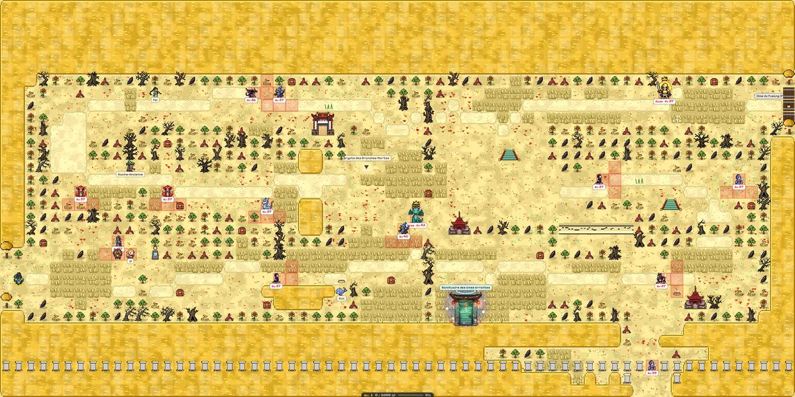
12345| Où | Mène à | Accès |
|---|---|---|
| ← bord ouest, en bas (case 0, 22) — passage de 3 cases | Terrasses de Fusang-le-Bas Village · on y arrive par le bord est | libre |
| ↓ bord sud, à droite (case 52, 31) — passage de 3 cases | Perchoir des Grues Hameau · on y arrive par le bord nord | fermé tant que vaincre Immortel égaré des branches n’est pas |
| → bord est, en haut (case 63, 8) — passage de 3 cases | Cime du Fusang Sanctuaire du soleil · on y arrive par le bord ouest | fermé tant que Le sceau des racines n’est pas accompli |
2 portes (maisons, grottes, escaliers)
| Où | Mène à | Accès |
|---|---|---|
| au centre (case 29, 13) | Crypte des Branches Mortes | libre |
| partie sud (case 37, 25) | Le Royaume des âmes errantes | libre |
Perchoir des Grues Hameau · 28 × 22 cases
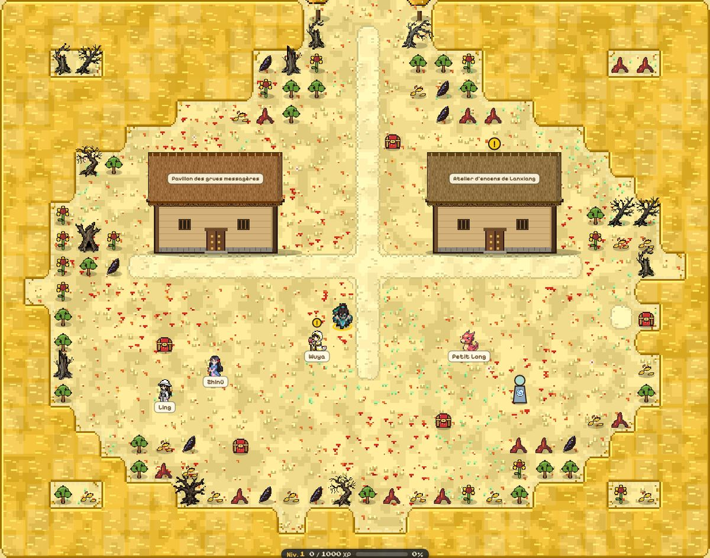
123| Où | Mène à | Accès |
|---|---|---|
| ↑ bord nord, au milieu (case 14, 0) — passage de 3 cases | Racines et Branches Dorées Zone sauvage · on y arrive par le bord sud | libre |
2 portes (maisons, grottes, escaliers)
| Où | Mène à | Accès |
|---|---|---|
| partie ouest (case 8, 9) | Pavillon des grues messagères | libre |
| partie est (case 19, 9) | Atelier d'encens de Lanxiang | libre |
Cime du Fusang Sanctuaire du soleil · 30 × 22 cases
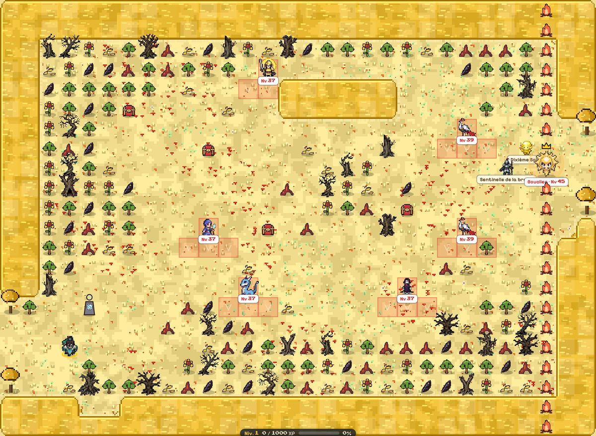
12| Où | Mène à | Accès |
|---|---|---|
| ← bord ouest, en bas (case 0, 17) — passage de 3 cases | Racines et Branches Dorées Zone sauvage · on y arrive par le bord est | libre |
| → bord est, au milieu (case 29, 8) — passage de 3 cases | Haute Mer des Pontons Route d’accès · on y arrive par le bord ouest | fermé tant que vaincre Soleil Lâche n’est pas |
| ↓ bord sud (tout le côté, c’est de la mer) | Rivage de la Mer Orientale on y arrive par le bord nord | à pied sur l’eau, avec le Pas de Yu, une fois vaincre Soleil des Marées accompli |
Autel de Mazu
- Haute Mer des Pontons (Route d’accès) — sortie par le bord est →, au milieu, puis entrée dans Shuiyu-sous-l'Eau par son bord ouest
- Shuiyu-sous-l'Eau (Village) — sortie par le bord est →, au milieu, puis entrée dans Gouffre des Mirages par son bord ouest
- Gouffre des Mirages (Zone sauvage) — sortie par le bord est →, au milieu, puis entrée dans Autel de Mazu par son bord ouest
- Autel de Mazu (Sanctuaire du soleil)
Haute Mer des Pontons Route d’accès · 48 × 22 cases
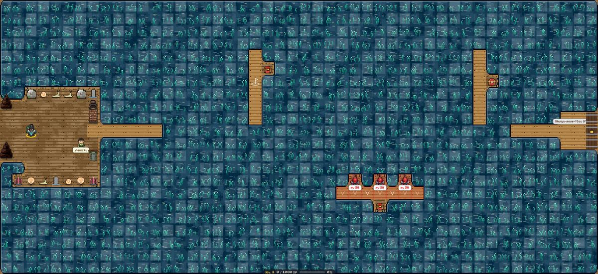
12| Où | Mène à | Accès |
|---|---|---|
| ← bord ouest, au milieu (case 0, 10) — passage de 3 cases | Cime du Fusang Sanctuaire du soleil · on y arrive par le bord est | libre |
| → bord est, au milieu (case 47, 10) — passage de 3 cases | Shuiyu-sous-l'Eau Village · on y arrive par le bord ouest | fermé tant que Le Pas de Yu n’est pas accompli |
Shuiyu-sous-l'Eau Village · 30 × 22 cases
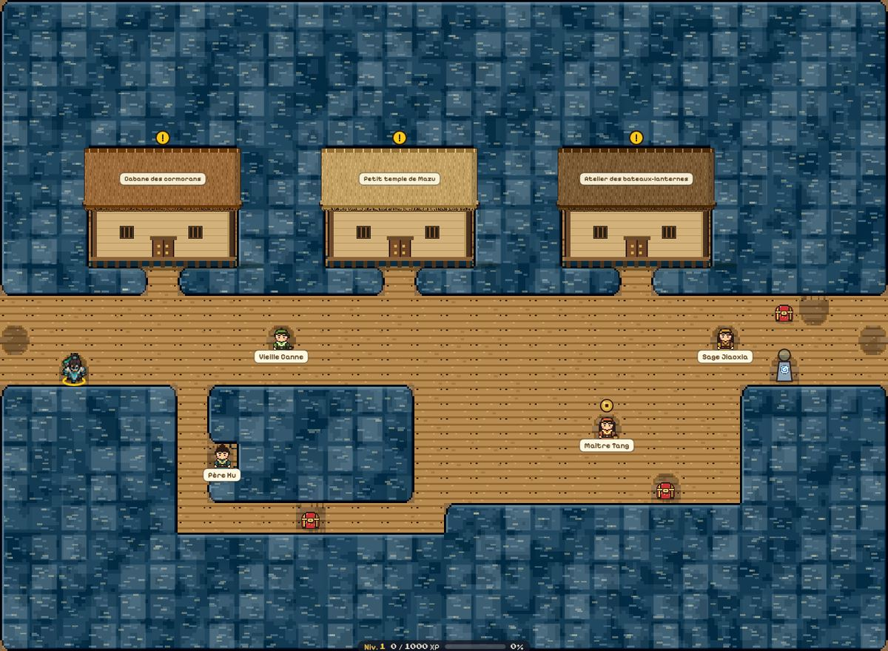
12345| Où | Mène à | Accès |
|---|---|---|
| ← bord ouest, au milieu (case 0, 11) — passage de 3 cases | Haute Mer des Pontons Route d’accès · on y arrive par le bord est | libre |
| → bord est, au milieu (case 29, 11) — passage de 3 cases | Gouffre des Mirages Zone sauvage · on y arrive par le bord ouest | libre |
3 portes (maisons, grottes, escaliers)
| Où | Mène à | Accès |
|---|---|---|
| partie ouest (case 5, 8) | Cabane des cormorans | libre |
| au centre (case 13, 8) | Petit temple de Mazu | libre |
| partie est (case 21, 8) | Atelier des bateaux-lanternes | libre |
Gouffre des Mirages Zone sauvage · 48 × 24 cases
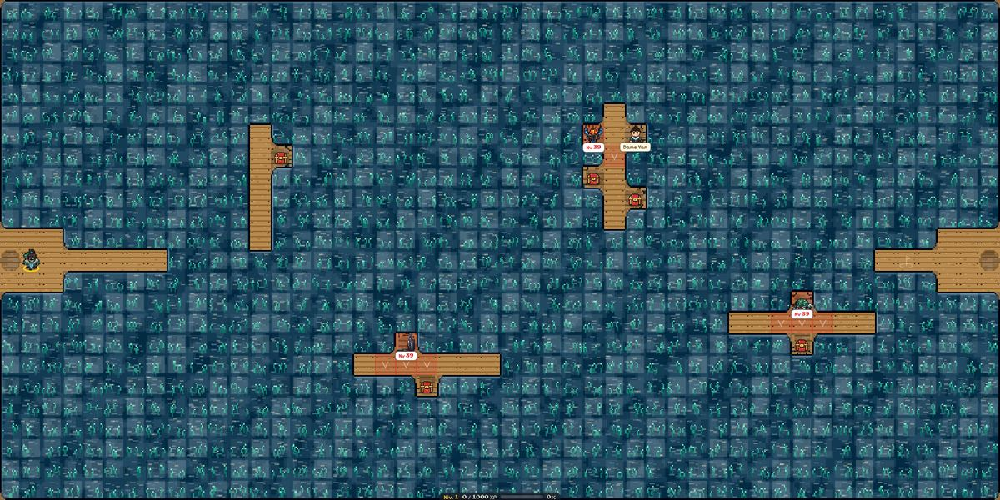
12| Où | Mène à | Accès |
|---|---|---|
| ← bord ouest, au milieu (case 0, 12) — passage de 3 cases | Shuiyu-sous-l'Eau Village · on y arrive par le bord est | libre |
| → bord est, au milieu (case 47, 12) — passage de 3 cases | Autel de Mazu Sanctuaire du soleil · on y arrive par le bord ouest | fermé tant que marees_compass_chest n’est pas accompli |
Autel de Mazu Sanctuaire du soleil · 30 × 22 cases
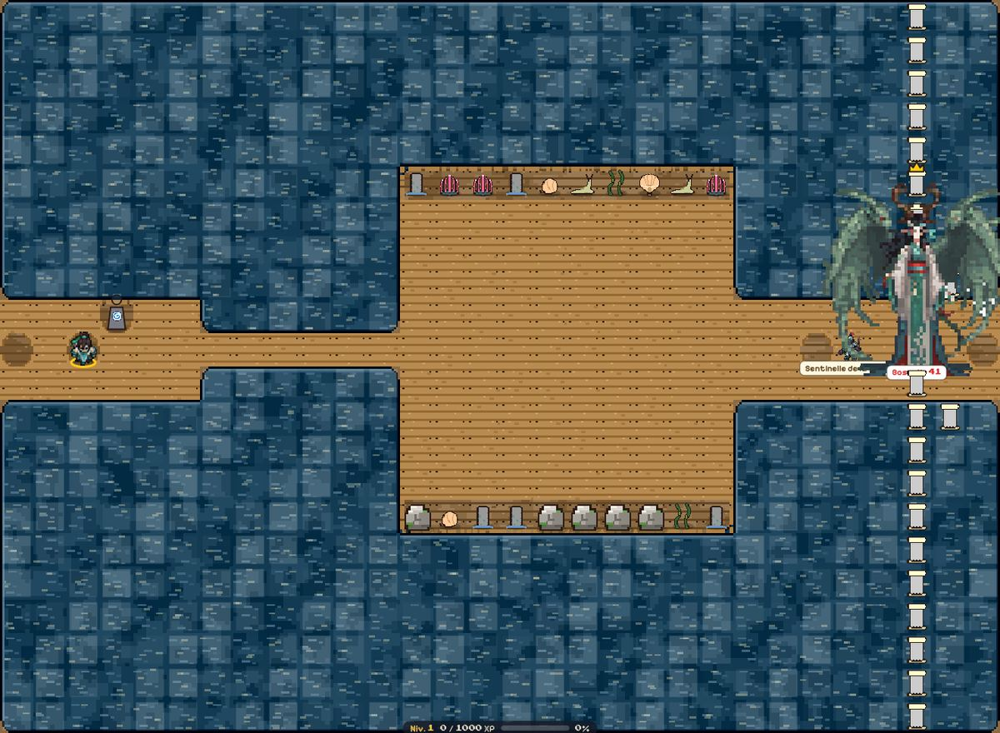
12| Où | Mène à | Accès |
|---|---|---|
| ← bord ouest, au milieu (case 0, 10) — passage de 3 cases | Gouffre des Mirages Zone sauvage · on y arrive par le bord est | libre |
| → bord est, au milieu (case 29, 10) — passage de 3 cases | Sentier Lunaire Route d’accès · on y arrive par le bord ouest | fermé tant que vaincre Changxi, mère des douze lunes n’est pas |
Pic de la Lune
- Sentier Lunaire (Route d’accès) — sortie par le bord est →, au milieu, puis entrée dans Hameau sous la Lune par son bord ouest
- Hameau sous la Lune (Village) — sortie par le bord est →, au milieu, puis entrée dans Sentier d'Argent par son bord ouest
- Sentier d'Argent (Zone sauvage) — sortie par le bord est →, en haut, puis entrée dans Pic de la Lune par son bord ouest
- Pic de la Lune (Sanctuaire du soleil)
Sentier Lunaire Route d’accès · 64 × 24 cases
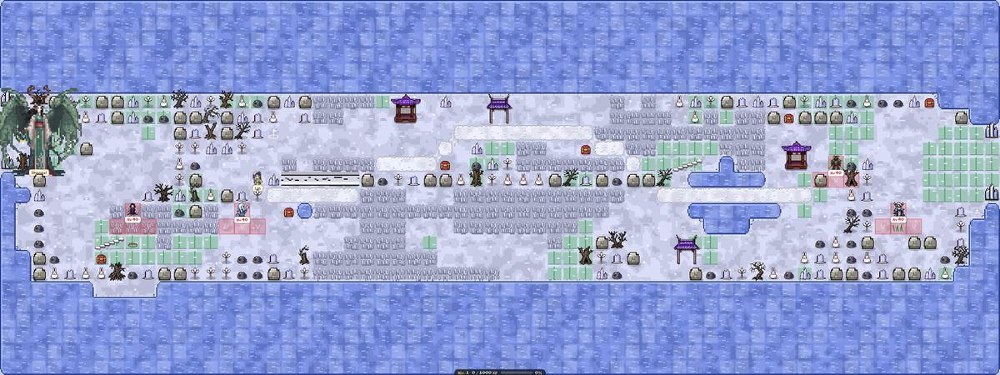
12| Où | Mène à | Accès |
|---|---|---|
| ← bord ouest, au milieu (case 0, 8) — passage de 3 cases | Autel de Mazu Sanctuaire du soleil · on y arrive par le bord est | libre |
| → bord est, au milieu (case 63, 10) — passage de 3 cases | Hameau sous la Lune Village · on y arrive par le bord ouest | libre |
Hameau sous la Lune Village · 26 × 24 cases
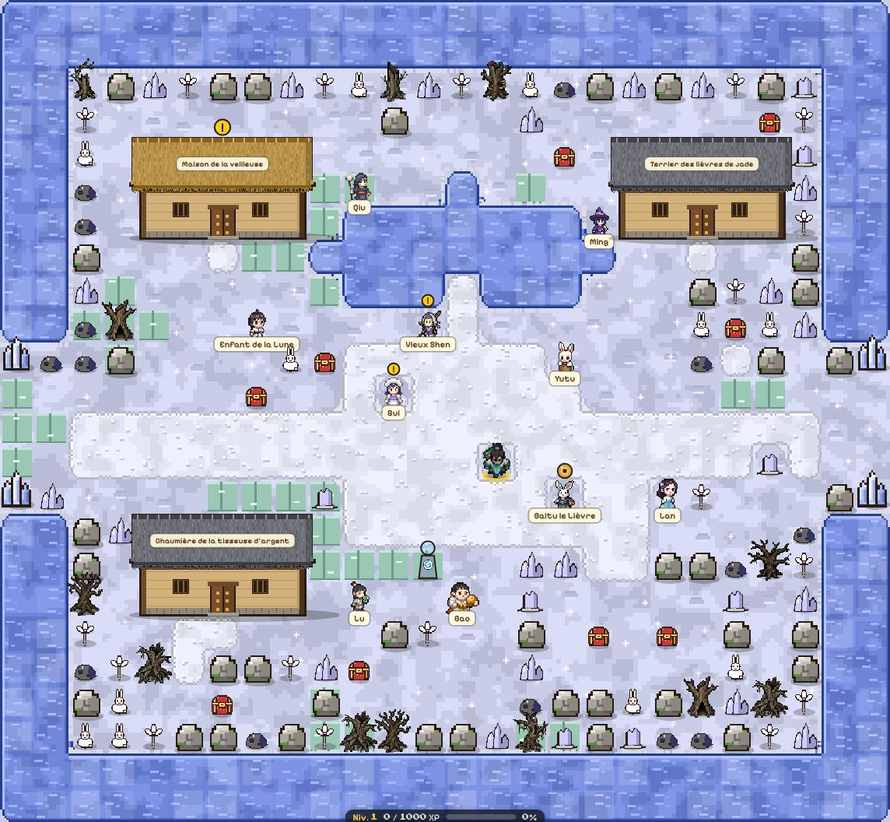
12345| Où | Mène à | Accès |
|---|---|---|
| ← bord ouest, au milieu (case 0, 12) — passage de 3 cases | Sentier Lunaire Route d’accès · on y arrive par le bord est | libre |
| → bord est, au milieu (case 25, 12) — passage de 3 cases | Sentier d'Argent Zone sauvage · on y arrive par le bord ouest | libre |
3 portes (maisons, grottes, escaliers)
| Où | Mène à | Accès |
|---|---|---|
| partie nord-ouest (case 6, 6) | Maison de la veilleuse | libre |
| partie nord-est (case 20, 6) | Terrier des lièvres de jade | libre |
| partie sud-ouest (case 6, 17) | Chaumière de la tisseuse d'argent | libre |
Sentier d'Argent Zone sauvage · 64 × 30 cases
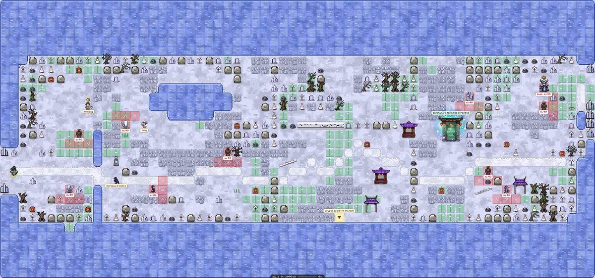
1234| Où | Mène à | Accès |
|---|---|---|
| ← bord ouest, au milieu (case 0, 18) — passage de 3 cases | Hameau sous la Lune Village · on y arrive par le bord est | libre |
| → bord est, en haut (case 63, 9) — passage de 3 cases | Pic de la Lune Sanctuaire du soleil · on y arrive par le bord ouest | fermé tant que moon_key_chest n’est pas accompli |
2 portes (maisons, grottes, escaliers)
| Où | Mène à | Accès |
|---|---|---|
| partie sud (case 36, 23) | Crypte du Lièvre de Jade | libre |
| partie est (case 48, 14) | Le Royaume des âmes errantes | libre |
Pic de la Lune Sanctuaire du soleil · 30 × 22 cases
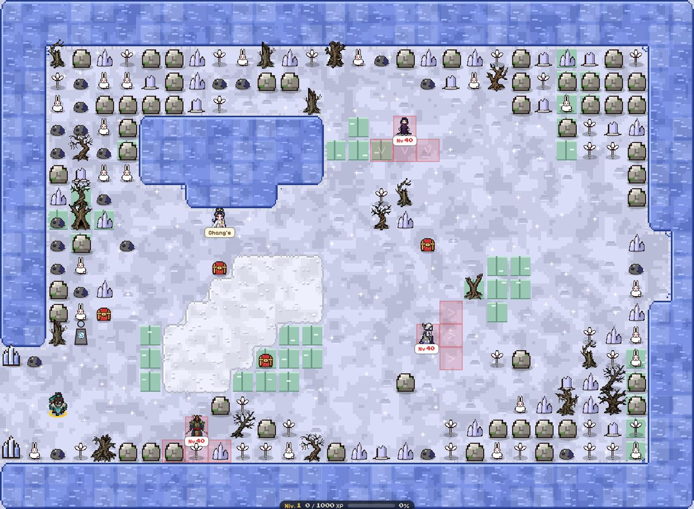
1| Où | Mène à | Accès |
|---|---|---|
| ← bord ouest, en bas (case 0, 17) — passage de 3 cases | Sentier d'Argent Zone sauvage · on y arrive par le bord est | libre |
Bordures de mer
Certaines cartes de régions voisines se touchent par la mer : le bord nord de l’une mène au bord sud de l’autre. Ces bords ne se franchissent qu’en marchant sur l’eau (Pas de Yu), une fois vaincu le gardien de la route vers la région la plus avancée des deux.
| Bord nord de | Mène au bord sud de | Gardien à vaincre |
|---|---|---|
| Lit du Fleuve Jaune (Sanctuaire du soleil) | Forêt de Bambous Calcinée (Sanctuaire du soleil) | vaincre Soleil des Eaux Taries |
| Forêt de Bambous Calcinée (Sanctuaire du soleil) | Monts du Tonnerre (Sanctuaire du soleil) | vaincre Soleil de Cendres |
| Désert de Gobi (Sanctuaire du soleil) | Plaine des Fauves (Sanctuaire du soleil) | vaincre Soleil des Orages |
| Rivage de la Mer Orientale (Sanctuaire du soleil) | Cime du Fusang (Sanctuaire du soleil) | vaincre Soleil des Marées |
| Piste des Caravanes (Route d’accès) | Piste des Troupeaux (Route d’accès) | vaincre Soleil des Orages |
| Port-à-Sec de Hekou (Village) | Village des Cent Tiges (Village) | vaincre Soleil des Eaux Taries |
| Méandres de Boue et d'Écluses (Zone sauvage) | Clairière des Lampions (Hameau) | vaincre Soleil des Eaux Taries |
| Sentier des Tiges Cendrées (Zone sauvage) | Refuge des Trois Cairns (Hameau) | vaincre Soleil de Cendres |
| Sentier des Moines (Route d’accès) | Escalier des Crêtes (Route d’accès) | vaincre Soleil de Cendres |
| Port aux Perles de Haiyan (Village) | Terrasses de Fusang-le-Bas (Village) | vaincre Soleil des Marées |